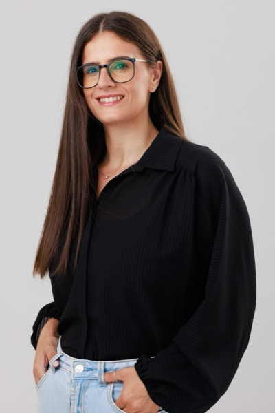

מבינה תהליכים. בונה מערכות שמשרתות אותם.
מהנדסת תעשייה וניהול, מנהלת מוצר ואשת תפעול עם ניסיון של 18+ שנים בחיבור בין אנשים, תהליכים, נתונים וטכנולוגיה לתוצאות שעובדות בפועל.

אני משלבת חשיבה מערכתית, הבנה תפעולית, יכולת מוצרית וטכנולוגיה. במהלך השנים עבדתי בצומת שבין תפעול, מוצר, דאטה, פיתוח ולקוחות — בסביבות מורכבות שבהן נדרש לתרגם צורך עסקי למערכת שעובדת.
העבודה שלי מתחילה תמיד מהשטח: להבין איך הארגון באמת עובד, איפה נוצרים צווארי בקבוק, אילו החלטות מתקבלות בלי מספיק מידע.
מערכת טובה לא מתחילה במסכים יפים או בטכנולוגיה מתקדמת, אלא בהבנה עמוקה של הצורך, של המשתמשים ושל התהליך העסקי שמאחוריהם.
לפני פתרון — הבנת הצורך האמיתי, מי המשתמשים ומה התהליך שמאחוריו.
מדברת עם מנהלים בשפת עסקים, עם מפתחים בשפת מערכות, עם משתמשים בשפת תפעול.
מלווה מרעיון ועד יישום בשטח, או מצטרפת לכל שלב שנדרש בו דיוק וסדר.
הערך שלי נמצא בשילוב — לא בכל תחום בנפרד אלא בדיוק בחיבור ביניהם.
אני מנתחת תהליכים מקצה לקצה: זרימת עבודה, ממשקים בין מחלקות, נקודות כשל, עומסים, כפילויות ופערי מידע. המטרה היא לבנות תהליך נכון — ברור, מדיד ויציב.
מתרגמת צרכים עסקיים ותפעוליים לדרישות מוצר ברורות: מה המערכת צריכה לעשות, מי המשתמשים, אילו נתונים נדרשים, ואיך נראה MVP נכון — ועד מערכות בסקייל ובשימוש מסחרי.
עוזרת לארגונים להפוך מידע מפוזר לתמונה ניהולית ברורה. בונה חשיבה סביב מדדים, KPI, דשבורדים והתראות — כך שמנהלים יבינו מה קורה, מה חריג ומה כדאי לעשות עכשיו.
הערך המרכזי שלי הוא היכולת לגשר בין המציאות התפעולית לבין פתרון טכנולוגי. לא מתחילה מהכלי, אלא מהבעיה. בונה פתרון שמתחבר לאנשים, לתרבות הארגון ולמטרות העסקיות.
תהליך העבודה שלי מבוסס על שלבים ברורים, שכל אחד מהם בונה על הקודם.
כל תואר הוסיף שכבה אחרת של חשיבה — ויחד הם יוצרים ראייה שלא מגיעה מתחום אחד בלבד.
אני בונה פתרונות מקצה לקצה או מצטרפת לכל שלב בדרך שבו נדרש דיוק, סדר ואפיון.